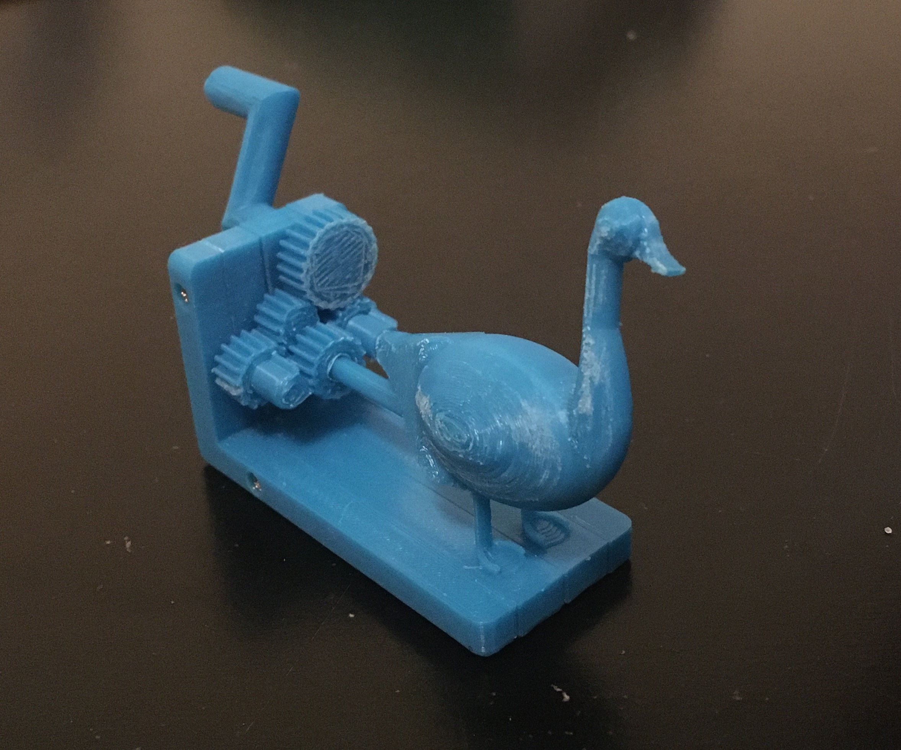
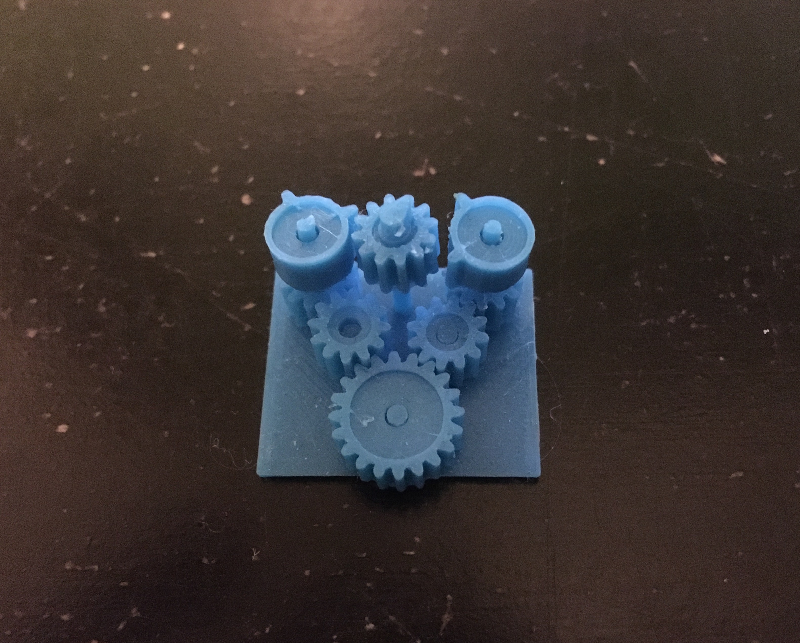
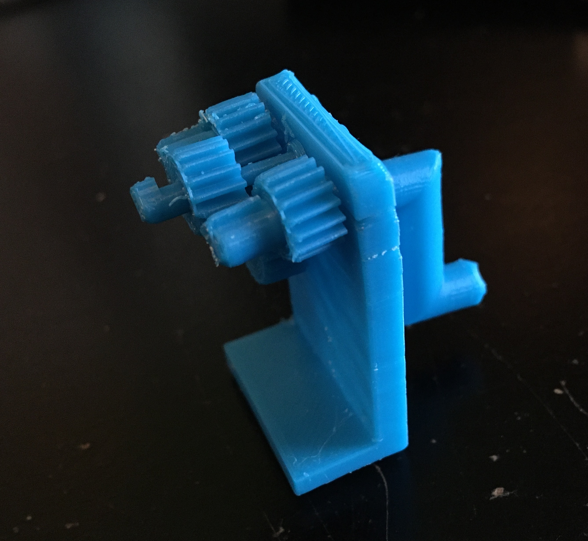

Geb
This project first began over the summer of 2020 when my grandma requested I 3D print her a goose. She was fond of the Canada Geese we had at home who would often congregate at a small pond not far from her house. To my surprise there weren't many good geese models on Thingiverse or GrabCad, so I decided to make my own. But it wouldn't just be a static goose, it would be a goose automaton that waddled as you rotated a crank. This project quickly developed from a small gift for my grandma to a serious design challenge where I would learn a lot about gear design, automaton design, and 3D printing. Once the goose automaton was complete, my grandma, well studied in her Egyption history and hieroglyphs, decided to name him Geb after the Egyption god of earth who is sometimes symbolized with a goose.
Geb, the Goose Automaton
3D Printing Gears
The first task I set myself to was figuring out how to 3D print a pair of meshing gears. We had briefly covered gear design in my engineering design class the previous semester so I had some insight coming in, but attempting to make some gears myself solidified some important lessons regarding gear design. These are the main points that informed my design:
- The rotational speed of a driven gear is dependent upon the rotational speed and size of the gear driving it.
- The rotational direction flips for each successive gear in a gear train.
- In order for the gears to mesh, they must have the same number of teeth per length along the gear circumference (equal diametral pitch and module).
- The shape of the gear tooth is crucial to ensure rolling as opposed to sliding action between meshing gear teeth so that the gears move smoothly and don't jump (conjugate action).
If two interacting gears have significantly different sizes, interference can also be a concern preventing the gears from meshing. However, since the gears I used in my design were similar in size, I skipped the calculation that would verify interference wouldn't be an issue.
First Prototype
Even with these points in mind, designing a gear in a computer-aided design (CAD) software like Solidworks is still no easy project. The special involute shape of the gear teeth that allows for that ideal rolling interaction between gear teeth can be sketched and constrained in a variety of ways. I tried following several youtube tutorials online, but all of them it seemed were for designing nice-looking gears rather than functional gears that actually meshed. This led me to return to the source where I had first learned about gears, Shigley's Mechanical Engineering Design textbook. There I learned some more information about how the involute shape was formed for gear teeth, but I was still not able to make a fully constrained Solidworks model. Having had little success making a model from scratch, I decided to go find a gear model online that I could use as a reference and then adapt to my needs. I downloaded a gear model from McMaster-Carr, a large American industrial supplier that provides Solidworks part files for all their products. From there I edited the part file to include some variables (namely module and pitch diameter) and equations for the gear dimensions. This way I could make any gear from that single part file by just changing the value of a single variable rather than going back through the part and redimensioning each sketch. With that file I made my first gear test print using two gears and a base to hold them at the right distance between each other.

First Prototype Using Gears with Module 0.5 mm and Pitch Radii of 6 mm and 10 mm.
Second Prototype
Prototype 1 was a great success! The gears meshed well even at this small size scale. With a successful gear model in stow, I began planning out the gear train that would allow the goose to "waddle", where I was defining waddling as rotating back and forth over a small angle range like a metronome. The design concept that I arrived at was to have two gears with a sparse number of teeth on either side of a gear connected to the goose. One of those two gears would rotate the goose left and the other would rotate the goose right. Using only a few teeth on each of the gears instead of teeth continuously across the gear circumference, the goose gear experiences rotation left, pause, rotation right, pause, and then the cycle repeats. To move the two "goose-controlling" gears simultaneously, another spur gear would be printed on the bottom of each of the "goose-controlling" gears in a compound arrangement as if they were connected on the same shaft. Then one larger drive gear would be used that the user would rotate with a crank.
Second Prototype Using Gear Train Concept
Third Prototype
With all these gears interacting with one another and rubbing on the base piece that held them in place, the friction in this system was immense. I could barely move the gears in the system with my fingers and therefore could not verify that my design concept worked. In my next prototype, I printed a thicker base to prevent warping in the base which had occurred with the last prototype, causing the gears to push up against each other at odd angles. I also offset the gears a little from the base so that they primarily rubbed against each other and not so much on the base.

Third Prototype Using Gear Train Concept with Reduced Friction
Fourth Prototype
In this improved model the friction was substantially reduced. However, I then realized I hadn't designed the waddling mechanism appropriately as both gears adjacent to the goose gear were rotating in the same direction. This would make the goose spin continously instead of waddling. Since the gear rotation direction flips for every gear, I removed one of the gears in between the big drive gear and the gears adjacent to the goose gear. Confident that this fix would work, I also redesigned the base to be vertical so that the goose would be standing as opposed to lying on its back. To prevent the gears from sliding off their shafts when hanging vertically, I redesigned the gears to be printed with a shaft attached. Each gear-with-shaft was then secured onto the base by assembling the base around the shafts. I also added a long crank to spin the drive gear with greater ease as it allows a greater torque to be applied to the drive gear.
Fourth Prototype
Final Prototype
This prototype was starting to look like a functioning mechanism, but having the base assembled around the shafts ended up adding too much flexibility to the base allowing the gears to move in and out of contact with one another. In the final prototype, I revised the base assembly to be more sturdy so that the gears would mesh consistently. I also designed a goose in Solidworks using an image from the internet for reference. Although the final prototype is no stunner and the gear train wasn't providing beautiful conjugate action, I'm proud with where the goose ended up.
Final Prototype Design and Demonstration